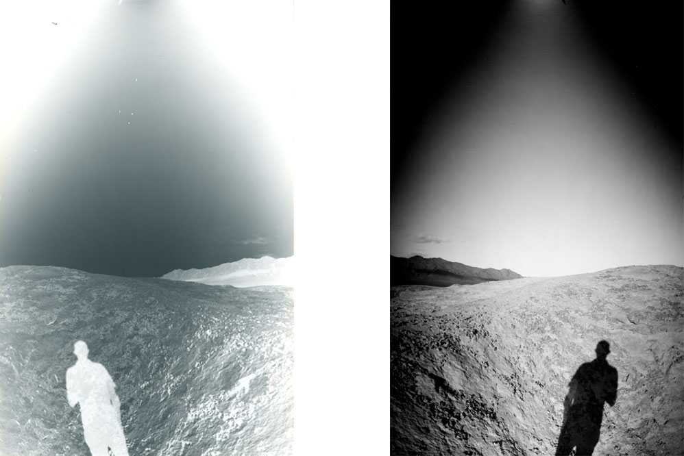

Developing your exposures is your next step. This is not a complicated process, and is in many ways the most exciting moment, where you will find out if your work to make the camera, choose the scene and make an exposure worked out how you imagined.
You need access to a room you can darken, ideally with a faucet. Usually a bathroom works. It doesn’t need to be pitch black because of the low sensitivity of photo paper, but you should ensure all windows and bottoms of doors are sealed so no light comes in. Developing at night makes this much easier.
Before mixing, check your water temperature. You should keep it at 68 degrees, plus or mins a few. Mixing the chemichals is a simple affair. Simply follow dilution directions in the bottle. In our case, we're using Arista, so we will follow the ratios below to make half a liter of chemistry for each tray. The first tray on the left will hold the developer, the middle one the stop bath, and the final one is for fixer. Keep your trays consistent: I choose red for developer, grey for stop bath and white for fixer. Place tongs on each tray.
| Red Tray Developer |
Grey Tray Stop Bath |
White Tray Fixer |
|---|---|---|
| 450 ml of water + 50ml of developer |
450 ml of water + 50ml of developer |
450 ml of water + 50ml of developer |
Now, the moment has arrived, to see what image you'll obtain. To do this, you will place the paper negative in each tray, for the times listed below. These are just guidelines, no need to be hyper-precise. Gently rock each tray back and forth to ensure even coverage of the negative.
| Red Tray Developer |
Grey Tray Stop Bath |
White Tray Fixer |
|---|---|---|
| 30-45 seconds | 30 seconds | 3 minutes |
Once the image is fixed, you can place the negative in a bath of fresh water to wait for final rinsing if you are developing multiple sheets. Otherwise, place the sheet in a clean tray and run with tap water for several minutes to ensure all the fixer is removed. Hang on clothesline to dry.
Your next task is to create a positive. This will be done by scanning your image and inverting in Photoshop. In addition you will further edit , retouch and crop as needed to obtain your final image. This guide does not cover editing, and assumes you can use the software of your choice to finalize, share and print the final image.
Help! My negative is totally black/white or really pale/dark! This can be over/under exposure or over/under development. Check your camera for light leaks, ensure your f/number and exposure times are adjust your exposure times by experimenting, and finally, check your chemistry ratios and temperature.